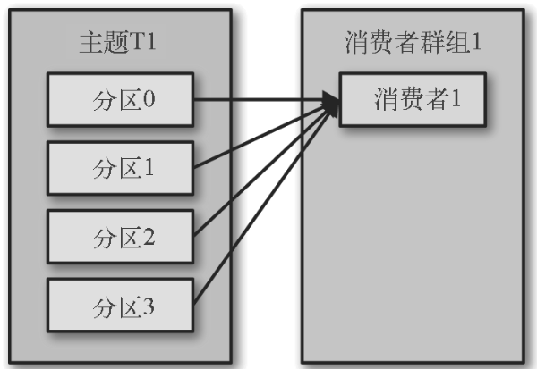
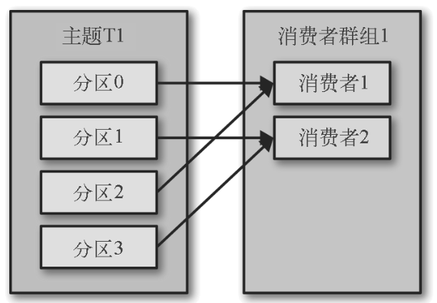
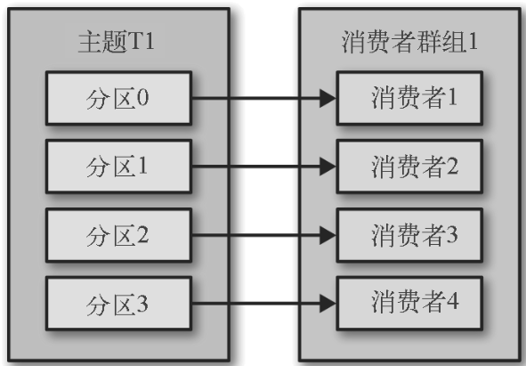
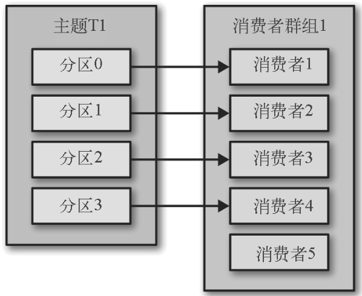
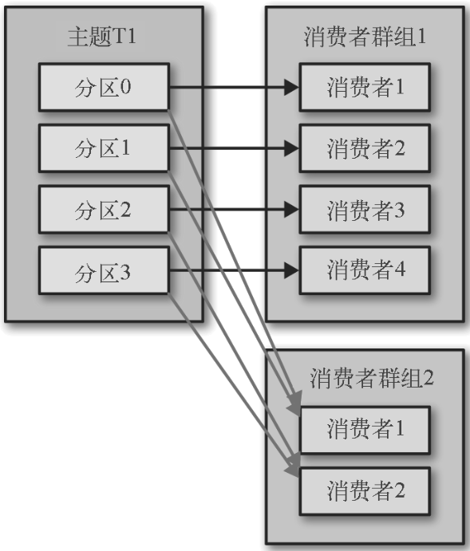

4.1、KafkaConsumer 概念
4.1.1、消费者和消费者群组
应用程序需要创建消费者对象，订阅主题并接收和处理消息。如果生产者往主题写入消息的速度超过了消息的消费速度，就需要多个消费者。
Kafka消费者属于消费者群组。一个群组中的消费者订阅的是同一个主题，每个消费者接受主题一部分分区的消息。
消费者群组只有一个消费者时，它将接收所订阅主题所有分区的消息。

消费者群组中消费者数量（2）小于主题分区数量（4）时，消费会各接收一部分分区的消息（消费者1接收分区0、2，消费者2接收1、3）。

消费者群组中消费者数量等于主题分区数量，消费者各接收一个分区的消息。

消费者群组中消费者数量大于主题分区数量，多余的消费者将闲置。

往消费者群组中增加消费者是横向扩展Kafka消费能力的主要方式。如果产生的消息过多，或者消费者消费速度较慢（消费者执行高延迟操作）时，可以增加消费者。同时，可以发现，有必要为主题创建大量的分区，在负载增长的时候可以加入更多的消费者。但是，要注意，多余的消费者只会被闲置。
除了增加消费者来扩展单个应用程序的消息接收能力外，还可以有多个应用程序从同一个主题获取消息，只是，每个应用程序获得的都是全部的消息，而不是一部分消息。上面的例子中，如果新增消费者群组，那么新增群组也将接收所有的消息，与已经存在的群组互不影响。

Kafka消费者和消费者群组的扩展不会对Kafka性能造成负面影响。
4.1.2、消费者群组合分区再均衡
增加或减少消费者群组中的消费者，或者增加主题的分区，都会导致分区重新分配。
分区的所有权从一个消费者转移到另一个消费者，这种行为称为再均衡。再均衡虽然可以为消费者群组带来高可用和伸缩性，但是，再均衡期间消费者无法读取消息，整个群组会在这段时间中不可用。另外，分区被重新分配给另一个消费者时，消费者当前的读取状态会丢失，它可能需要去刷新缓存，在它恢复之前会拖慢应用程序。
消费者通过向被指派为群组协调器的broker（不同群组可以有不同的协调器）发送心跳来维持它们和群组的从属关系以及它们对分区的所有权关系。只要消费者以正常的时间间隔发送心跳，就被认为是活跃的，说明它还在读取分区里的消息。消费者会在轮询消息（为了获取消息）或提交偏移量时发送心跳。如果消费者停止发送心跳的时间足够长，会话就会过期，群组协调器认为他已经死亡，就会触发一次再均衡。
如果消费者发生崩溃并停止读取消息，群组协调器会等待几秒钟，确认它死亡后才会触发再均衡。在清理消费者时，消费者会通知协调器它将要离开群组，协调器会立即触发一次再均衡，尽量降低处理停顿。
心跳行为在最近版本中的变化
在 0.10.1 版本里，Kafka 社区引入了一个独立的心跳线程，可以在轮询消息的空档发送心跳。这样，发送心跳的频率（也就是消费者群组用于检测发生崩溃的消费者或不再发送心跳的消费者的时间）与消息轮询的频率（由处理消息所花费的时间来确定）之间就是相互独立的。在新版本的 Kafka 里，可以指定消费者在离开群组并触发再均衡之前可以有多长时间不进行消息轮询，这样可以避免出现活锁（livelock），比如有时候应用程序并没有崩溃，只是由于某些原因导致无法正常运行。这个配置与 session.timeout.ms 是相互独立的，后者用于控制检测消费者发生崩溃的时间和停止发送心跳的时间。
如果使用的是较新版本的 Kafka，并且需要处理耗费较长时间的消息，只需要加大 max.poll.interval.ms 的值来增加轮询间隔的时长。
分配分区的过程
当消费者要加入群组时，它会向群组协调器发送一个 JoinGroup 请求。第一个加入群组的消费者将成为「群主」。群主从协调器那里获得群组的成员列表（列表中包含了所有最近发送过心跳的消费者，它们被认为是活跃的），并负责给每一个消费者分配分区。它使用一个实现了 PartitionAssignor 接口的类来决定哪些分区应该被分配给哪个消费者。
分区分配完毕之后，群主把分配情况列表发送给群组协调器，协调器再把这些信息发送给所有消费者。每个消费者只能看到自己的分配信息，只有群主知道群组里所有消费者的分配信息。这个过程会在每次再均衡时重复发生。